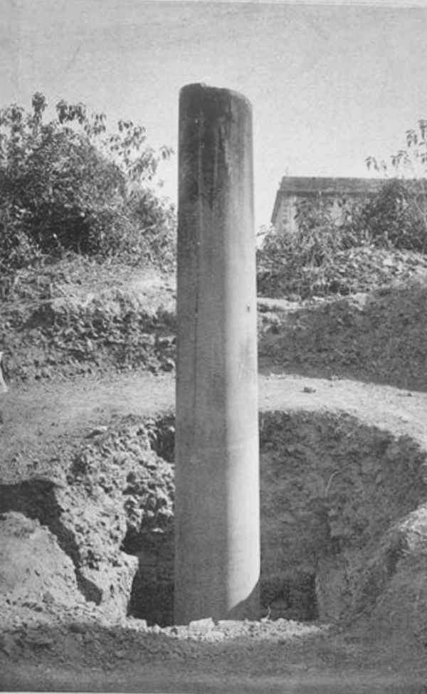

Pre History and Early History
Nepal’s rich prehistory consists mainly of the legendary traditions of the Newar, the indigenous community of Nepal Valley (now usually called Kathmandu Valley). There are usually both Buddhist and Brahmanic Hindu versions of these various legends. Both versions are accepted indiscriminately in the festivals associated with legendary events, a tribute to the remarkable synthesis that has been achieved in Nepal between the two related but divergent value systems. References to Nepal Valley and Nepal’s lower hill areas are found in the ancient Indian classics, suggesting that the Central Himalayan hills were closely related culturally and politically to the Gangetic Plain at least 2,500 years ago. Lumbini, Gautama Buddha’s birthplace in southern Nepal, and Nepal Valley also figure prominently in Buddhist accounts. There is substantial archaeological evidence of an early Buddhist influence in Nepal, including a famous column inscribed by Ashoka (emperor of India, 3rd century BCE) at Lumbini and several shrines in the valley. A coherent dynastic history for Nepal Valley becomes possible, though with large gaps, with the rise of the Licchavi dynasty in the 4th or 5th century. Although the earlier Kirati dynasty had claimed the status of the Kshatriya caste of rulers and warriors, the Licchavis were probably the first ruling family in that area of plains Indian origin. This set a precedent for what became the normal pattern thereafter—Hindu kings claiming high-caste Indian origin ruling over a population much of which was neither Indo-Aryan nor Hindu. The Licchavi dynastic chronicles, supplemented by numerous stone inscriptions, are particularly full from 500 to 700 CE; a powerful, unified kingdom also emerged in Tibet during this period, and the Himalayan passes to the north of the valley were opened. Extensive cultural, trade, and political relations developed across the Himalayas, transforming the valley from a relatively remote backwater into the major intellectual and commercial centre between South Asia and Central Asia. Nepal’s contacts with China began in the mid-7th century with the exchange of several missions. But intermittent warfare between Tibet and China terminated this relationship, and, while there were briefly renewed contacts in subsequent centuries, these were reestablished on a continuing basis only in the late 18th century.